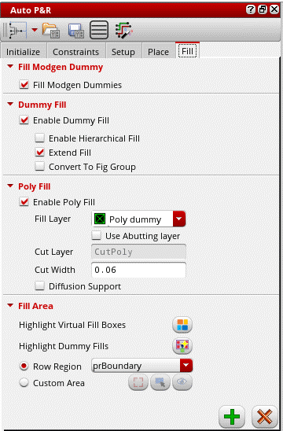
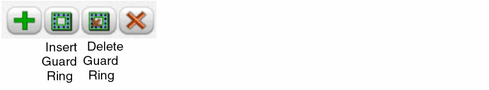

Generating and Deleting Base Layer Fill
Before generating base layer fill in the Virtuoso automated device placement and routing flow, ensure the following:
-
The N- and P- cells have their component class set correctly to one of
PFIN,NFIN,NMOS, orPMOS. - The connections in the design are correct.
- Signal type is correctly defined for power and ground nets.
- The same type of devices with different bulk nets are not placed in the same row. If present, an extra space is added while inserting dummy fill to avoid shorts.
The fill command adds a single instance of multi-fingered fill in gaps between active devices.
-
Open the Fill tab of the Auto P&R assistant.
 - Select Fill Modgen Dummies to fill the gaps between Modgens selected on the layout canvas with Modgen dummies. If there are no Modgens selected, then dummies are added to fill the gaps of all the Modgens inside the PR Boundary on the layout canvas.
-
Specify the type of Modgen dummies to be inserted when the Fill Modgen Dummies icon is clicked in the Fill tab—Default, Analog Dummy, or Stack Dummy. This option is available only in certain advanced nodes designs.
- Select Enable Dummy Fill to enable the dummy fill options.
- Select Enable Hierarchical Fill to search through the hierarchy to identify gaps to be filled.
- Select Extend Fill to extend cell fill in all directions. This option takes into consideration the transition spacing specified on the Place tab.
- Select Convert to Fig Group to convert fill to a figGroup when the fill is executed on a draw region or virtual group.
- Select Enable Poly Fill to insert poly fill.
-
Select a Fill Layer to derive cut-poly rails. The default value is the first layer-purpose pair that has its layer function set to
Poly. - Select Use Abutting layer to use the abutting layer of the active or passive region as the fill layer.
-
Cut Layer is set to
CutPoly. You cannot edit this value. - Specify the Cut Width. The default value is set to the minimum width value for the cut layer as defined in the technology file.
- Select Diffusion Support to allow poly fill to be inserted around diffusion shapes.
- Click Highlight Virtual Fill Boxes to highlight virtual fill boxes in which fill cells are to be inserted.
- Select Highlight Dummy Fills to highlight dummies in the layout. You can visually differentiate between active devices and dummies.
-
Use one of the following methods to specify the area to be filled:
- Row Region (default): Select a row region from the drop-down list Inserts fill only in the specified row region. You can select either All (default), which refers to all row regions in the current cellview, or a specific row region from the drop-down list.
-
Custom Area: Inserts fill in the custom area drawn. Click the icon and draw the required area in the canvas. When you draw a new custom area, the previous one is automatically deleted.
-
In certain advanced node flows, you can use the following options to create or delete guard rings after inserting fill:
The Create Guard Ring and Delete Guard Ring buttons work for both row regions and custom area. When there is no a valid row region, these buttons are disabled.
Add fill before creating a guard ring, especially if the existing virtual groups are not rectangular or contain gaps. - Click the Insert Fill icon to generate the required dummy and poly fill as per your specifications.
Select instances in the schematic to view the dummy fill around these devices. You can also see the gate poly of the devices being extended by the poly fill and the cut poly rails between rows of devices.
Poly fill are automatically snapped to the nearest snap patterns. In the absence of active snap pattern definitions, tracks are derived based on existing poly shapes. This may result in empty areas in regions where there is no active snap pattern definitions or poly shapes.
Deleting Fill
- Select the required options in the Dummy Fill and Poly Fill areas to indicate the device fill to be deleted.
- Click Delete Fill.
Related Topics
Base Layer Fill in the Automated Device Placement and Routing Flow
Troubleshoot Poly Fill Generation
Return to top